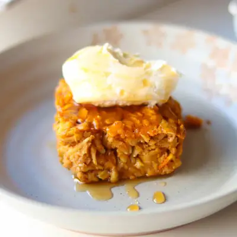

Pumpkin Baked Oatmeal

Ingredients
- 1 cup (240g) canned pumpkin puree
- 1/2 cup (130g) greek yogurt
- 3/4 cup milk of choice
- 2 eggs
- 1/3 cup maple syrup
- 1 teaspoon vanilla extract
- 2 cups (200g) rolled oats
- 2 teaspoons pumpkin pie spice
- 1/2 teaspoon cinnamon
- 1 tablespoon chia seeds (I love this brain booster blend)
- 1 teaspoon baking powder
- 1/4 teaspoon salt
- 1/2 cup chopped walnuts or pecans
Steps
- Preheat the oven to 375°F. Lightly grease an 8x8-inch baking dish.
- In the baking dish, whisk together the pumpkin, milk, Greek yogurt, eggs, vanilla, and maple syrup until well combined.
- Add the oats, pumpkin pie spice, cinnamon, chia seeds, baking powder, and salt. Stir until everything is evenly combined.
- Fold in the chopped walnuts or pecans, then spread the mixture into an even layer.
- Bake for 30–35 minutes, or until the center is set.
- Let cool for 10–15 minutes before slicing. Serve warm with a drizzle of maple syrup, a spoonful of Greek yogurt, nut or seed butter, fresh fruit, or a splash of milk. For babies, you can skip the maple syrup and serve with plain yogurt or mascarpone and soft fruit.
Recipe by Min Kwon · Kidfriendly Meals, from MJ and Hungryman. Saved here for personal use; the original has the full notes, tips and photos. Open original